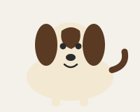

Beagle
- Size: Small to medium, about 13–15 inches tall.
- Personality: Curious, cheerful and friendly with everyone.
- Care: Needs daily walks and a secure yard—their nose loves to wander.
Welcome to the Virtual Dog Park! This is a small, beginner-friendly website where you can read about three dog breeds and look after your very own virtual dog.
Meet three friendly breeds. Each card shows a simple illustration and short, everyday care notes.
